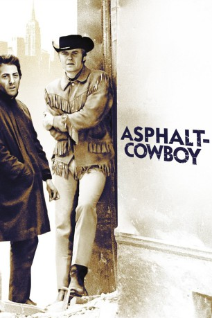
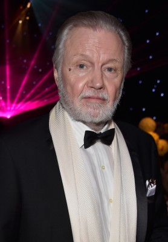
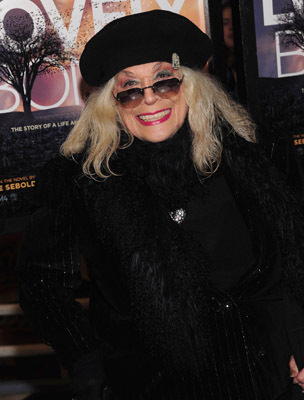
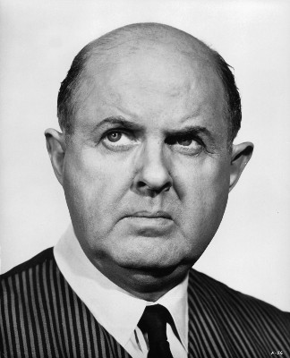
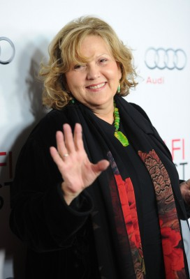
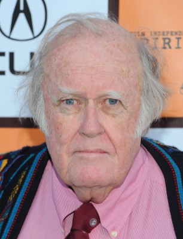
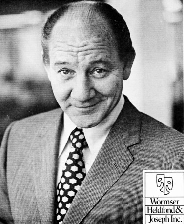

#4047 Asphalt-Cowboy
Alternativ: Midnight Cowboy
Auszeichnungen: 3 Oscars gewonnen für 4 Oscars nominiert 1 GoldenGlobes gewonnen 6 BAFTA-Awards gewonnen
 
 IMDB-Wertung: 7.9 / 10
IMDB-Wertung: 7.9 / 10  Metascore: 0
Metascore: 0 
Der selbstbewußte Texaner Joe Buck (Jon Voight) hat das Landleben satt und reist nach New York, um als Callboy die Damen zu beglücken. Doch mit seiner naiven Cowboy-Aufmachung wird er in der kaltherzigen Stadt nur belächelt und abgezockt. Auf diesem Wege lernt er den verkrüppelten und todkranken Kleinganoven Rizzo (Dustin Hoffman) kennen. Joe erkennt, dass dies sein einziger Freund in der fremden Welt ist. Die zwei raufen sich zusammen und kämpfen um das tägliche Überleben. Während Joe nur bei den Kerlen landet, träumt Rizzo vom sonnigen Strand in Miami. Und beide wissen, dass der Ausweg aus der Misere nur in der Flucht vor dem tristen Alltag liegen kann.
Jahr: 1969
Dauer: 113 Minuten
FSK: 16
Land: USA Studio: United ArtistsTonspuren: DTS - ,
Untertitel: Deutsch,
Auflösung: 1080p (1920x1040) Größe: 8151 MB
Genre: Drama
Regisseur:  John Schlesinger
John Schlesinger
Drehbuch: Anne Giafferi
Soundtrack:
Darsteller:
 Dustin Hoffman als Ratso
Dustin Hoffman als Ratso-  Jon Voight als Joe Buck
-  Sylvia Miles als Cass
-  John McGiver als Mr. O'Daniel
-  Brenda Vaccaro als Shirley
 Barnard Hughes als Towny
Barnard Hughes als Towny Ruth White als Sally Buck - Texas
Ruth White als Sally Buck - Texas- Jennifer Salt als Annie - Texas
- Georgann Johnson als Rich Lady - New York
 Bob Balaban als The Young Student - New York
Bob Balaban als The Young Student - New York- Viva als Gretel McAlbertson - The Party
- Taylor Mead als The Party
- Paul Morrissey als The Party
- Randall Carver als Rapist in Flashback , uncredited
- Sandy Duncan als Woman in TV Montage , uncredited
- Barbara Maggio als Gina , uncredited
-  M. Emmet Walsh als Bus Passenger , uncredited
- Bill Walters als St. Bernard Owner , uncredited
- Gilman Rankin als Woodsy Niles - Texas
- Gary Owens als Little Joe - Texas
- T. Tom Marlow als Little Joe - Texas
- George Eppersen als Ralph - Texas
- Al Scott als Cafeteria Manager - Texas
- Linda Davis als Mother on the Bus - Texas
- J.T. Masters als Old Cow-Hand - Texas
- Arlene Reeder als The Old Lady - Texas
- Jonathan Kramer als Jackie - New York
- Anthony Holland als TV Bishop - New York
- Jan Tice als Freaked-Out Lady - New York
 Paul Benjamin als Bartender - New York
Paul Benjamin als Bartender - New York- Peter Scalia als Vegetable Grocer - New York
- Vito Siracusa als Vegetable Grocer - New York
- Peter Zamagias als Hat Shop Owner - New York
- Arthur Anderson als Hotel Clerk - New York
- Tina Scala als Laundromat Lady - New York
- Alma Felix als Laundromat Lady - New York
- Richard Clarke als Escort Service Man - New York
- Ann Thomas als The Frantic Lady - New York
- Paul Rossilli als Hansel McAlbertson - The Party
- Ultra Violet als The Party
- Paul Jabara als The Party
- International Velvet als The Party
- Cecelia Lipson als The Party
- Joan Murphy als The Waitress - Florida
- Al Stetson als Bus Driver - Florida
- Pat Ast als Party Guest , uncredited
- Bernice als Dog Outside Warhol Party , uncredited
- Mary Boylan als Old Lady in Subway , uncredited
-  Philip Bruns als Man in TV Montage , uncredited
- Marlene Clark als Girl at Party , uncredited
Datei: X:\1969\Asphalt-Cowboy (1969, FSK16, 1920x1040).mkv seit 15.07.2016
Festplatte: HD 1900-1970
 Es gibt insgesamt 22 Filme in der Gruppe '1969'
Es gibt insgesamt 22 Filme in der Gruppe '1969'